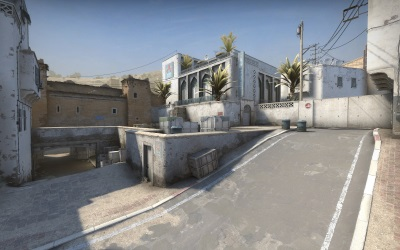
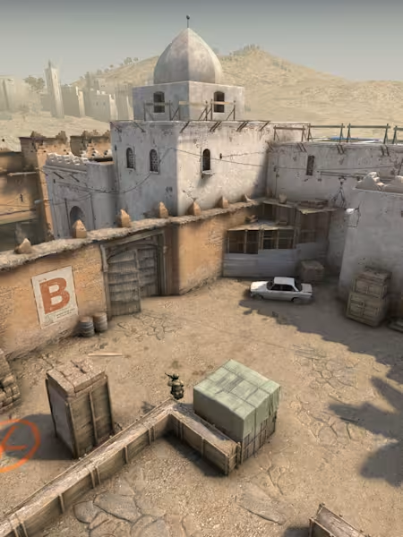

Iconic Map Overview

Iconic Map Overview | |
Dust II is one of the most iconic maps in CS:GO. Known for its balanced design, it provides equal opportunities for both Counter-Terrorists and Terrorists. The map features notable spots like A Long, A Site, B Site, and Mid, making it a favorite for both casual and competitive play.
|

A Site - A critical location for bomb plants and defuses, known for its tactical depth. |

B Site - A heavily contested area, essential for defensive strategies and retakes. |